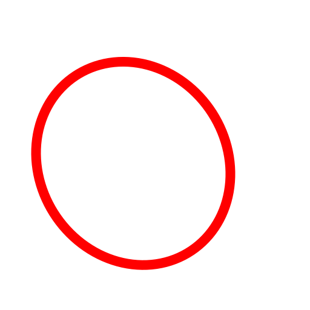

Inscribed in Quadrilateral (E, Q)
Toolbar / Icon:

Menu: Draw > Ellipse > Inscribed in Quadrilateral (E, Q)
Commands: ellipseinscribedquad | eq
Description:
Draws an ellipse that is inscribed in a quadrilateral.
Procedure:
- Specify the first line of the quadrilateral.
- Specify the second line of the quadrilateral.
- Specify the third line of the quadrilateral.
- Specify the fourth line of the quadrilateral.